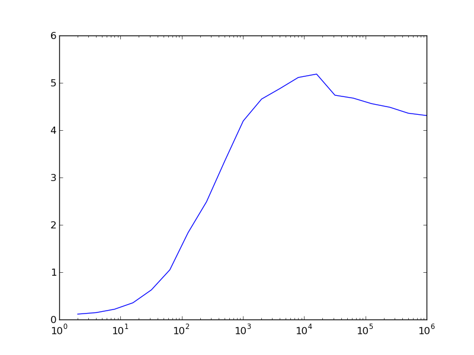

Laufzeituntersuchungen¶
Allgemeine Vorbemerkungen¶
Python wird immer wieder vorgeworfen, dass es im Vergleich zu einer Reihe anderer Programmiersprachen langsam sei. Häufig stellt dies kein echtes Problem dar, aber bei Bedarf gibt es zur Optimierung von Pythonskripten eine Reihe von Möglichkeiten. Die konsequente Verwendung von NumPy kann bei dazu geeigneten Anwendungen einen erheblichen Geschwindigkeitsvorteil bringen. Unter Umständen kann es auch sinnvoll sein, besonders zeitkritische Programmteile in C zu implementieren. In diesem Fall bietet sich die Verwendung des bereits in einem früheren Kapitel erwähnten Cython an. Mit dessen Hilfe ist es auch sehr einfach möglich, die Rechenzeit durch das Festlegen des Datentyps von Variablen zu reduzieren. Alternativ bietet sich auch die »just in time«-Kompilierung zum Beispiel mit PyPy [2] oder Numba [3] an, die die Programmausführung beschleunigen kann.
Im Einzelfall sollte man zunächst überlegen, ob das Laufzeitproblem wirklich schwerwiegend ist oder ob man für die Optimierung letztlich mehr Zeit investieren muss als man gewinnt. Es lohnt sich dabei, auf den Altmeister Donald E. Knuth zu hören, der schon vor mehr als 40 Jahren schrieb:
There is no doubt that the grail of efficiency leads to abuse. Programmers waste enormous amounts of time thinking about, or worrying about, the speed of noncritical parts of their programs, and these attempts at efficiency actually have a strong negative impact when debugging and maintentance are considered. We should forget about small efficiencies, say about 97 % of the time: premature optimization is the root of all evil.
Yet we should not pass up our opportunities in that critical 3 %. A good programmer will not be lulled into complacency by such reasoning, he will be wise to look carefully at the critical code; but only after that code has been identified. [1]
Bevor man also überhaupt mit der Optimierung eines Programms beginnt, sollte man zunächst immer erst feststellen, wo das Programm die meiste Zeit verbringt. Es lohnt sich nicht, Zeit in die Optimierung von Programmteilen zu investieren, deren Laufzeit im Vergleich zur gesamten Laufzeit unerheblich ist. Nach jeder Optimierung wird man erneut den laufzeitkritischsten Programmteil identifizieren, um so in eventuell mehreren Schritten zu einer hoffentlich akzeptablen Laufzeit zu kommen.
Vor der Optimierung eines Programms sollte man immer bedenken, dass sich dabei
Fehler einschleichen können. Es nützt alles nicht, wenn man das Programm
geändert hat, so dass es viel schneller läuft, dann aber nicht mehr das tut was
es eigentlich tun soll. Daher sollte man mindestens eine funktionstüchtigte
Version des Programms aufbewahren, z.B. eine Kopie, die eine Endung .bak
erhält. Wesentlich besser ist es natürlich, ein Versionskontrollsystem zu
verwenden, beispielsweise Git, das wir im Kapitel Versionskontrolle mit Git beschrieben
haben. Außerdem ist es sinnvoll, Tests zu programmieren, die es erlauben, die
neue Programmversion auf Korrektheit zu überprüfen. Techniken hierfür werden
im Kapitel Testen von Programmen besprochen.
Bevor wir einige Möglichkeiten diskutieren, die Laufzeit von Python-Skripten zu bestimmen, wollen wir im nächsten Abschnitt zunächst auf einige Schwierigkeiten bei der Laufzeitmessung hinweisen.
Fallstricke bei der Laufzeitmessung¶
Python stellt mit dem Modul time eine Möglichkeit zur Verfügung, die
aktuelle Zeit und damit letztlich auch Zeitdifferenzen zu bestimmen.
In [1]: import time
In [2]: time.ctime()
Out[2]: 'Thu Dec 22 14:39:30 2016'
Auch wenn die aktuelle Zeit hier in einem gut lesbaren Format ausgegeben wird, eignet sich dieses Ergebnis nur schlecht zur Bildung von Zeitdifferenzen. Besser ist es, die Zahl der Sekunden seit Beginn der „Zeitrechnung“ zu bestimmen. Dabei beginnt die Zeitrechnung auf Unix-Systemen am 1.1.1970 um 00:00:00 UTC.
In [3]: time.time()
Out[3]: 1482413973.190686
Damit lässt sich nun die Zeit bestimmen, die ein bestimmter Python-Code benötigt, wie folgendes Beispiel zeigt.
1 2 3 4 5 6 7 8 | import time
summe = 0
start = time.time()
for n in range(1000000):
summe = summe+1
ende = time.time()
print('{:5.3f}s'.format(ende-start))
|
Hier wird die Zeitdauer gemessen, die die Schleife in den Zeilen 5 und 6 benötigt. Allerdings ist diese Zeit keineswegs immer genau gleich lang. Das um eine Schleife erweiterte Skript
1 2 3 4 5 6 7 8 9 | import time
for _ in range(10):
summe = 0
start = time.time()
for n in range(1000000):
summe = summe+1
ende = time.time()
print('{:5.3f}s'.format(ende-start), end=' ')
|
liefert zum Beispiel die folgende Ausgabe
0.150s 0.108s 0.104s 0.103s 0.107s 0.106s 0.104s 0.103s 0.103s 0.103s
wobei das Ergebnis beim nächsten Lauf oder erst recht auf einem anderen Computer
deutlich anders aussehen kann. Es kann also sinnvoll sein, über mehrere Durchläufe
zu mitteln, wie es das timeit-Modul tut, das wir im nächsten Abschnitt
besprechen werden.
Bei der Ermittlung von Laufzeiten ist weiter zu bedenken, dass der Prozessor
auch von anderen Aufgaben in Anspruch genommen wird, so dass wir gerade zwar
die während des Laufs verstrichene Zeit bestimmt haben, nicht aber die Zeit,
die der Prozessor hierfür tatsächlich aufgewendet hat. Dies illustrieren wir im
folgenden Beispiel, in dem wir das Skript zeitweilig pausieren lassen. Damit
wird in Zeile 9 simuliert, dass andere Prozesse für eine Unterbrechung der
Ausführung unseres Skripts sorgen. Außerdem benutzen wir in den Zeilen 5 und 11
time.process_time(), um die vom Prozessor aufgewandte Zeit für den Prozess
zu bestimmen, in dem unser Skript abgearbeitet wird.
1 2 3 4 5 6 7 8 9 10 11 12 13 | import time
summe = 0
start = time.time()
start_proc = time.process_time()
for n in range(10):
for m in range(100000):
summe = summe+1
time.sleep(1)
ende = time.time()
ende_proc = time.process_time()
print('Gesamtzeit: {:5.3f}s'.format(ende-start))
print('Systemzeit: {:5.3f}s'.format(ende_proc-start_proc))
|
Die Ausgabe
Gesamtzeit: 10.248s
Systemzeit: 0.238s
zeigt, dass die Gesamtdauer des Skripts erwartungsgemäß um etwa 10 Sekunden länger ist als die in Anspruch genommene Prozessorzeit.
Vorsicht ist auch geboten, wenn man den zu testenden Codeteil der Übersichtlichkeit halber in eine Funktion auslagert, da dann die Zeit für den Funktionsaufruf relevant werden kann. Dies ist besonders der Fall, wenn die eigentliche Auswertung der Funktion nur sehr wenig Zeit erfordert. So liefert der folgende Code
1 2 3 4 5 6 7 8 | import time
summe = 0
start_proc = time.process_time()
for n in range(10000000):
summe = summe+1
ende_proc = time.process_time()
print('Systemzeit: {:5.3f}s'.format(ende_proc-start_proc))
|
eine Laufzeit von 1,122 Sekunden, während der äquivalente Code
1 2 3 4 5 6 7 8 9 10 11 | import time
def increment_by_one(x):
return x+1
summe = 0
start_proc = time.process_time()
for n in range(10000000):
increment_by_one(summe)
ende_proc = time.process_time()
print('Systemzeit: {:5.3f}s'.format(ende_proc-start_proc))
|
mit 1,529 Sekunden gemessen wurde und somit um fast 40 Prozent langsamer läuft.
Unabhängig von den genannten Problemen bedeutet jede Laufzeitmessung immer einen Eingriff in die Ausführung des Skripts, so dass die gemessene Laufzeit unter Umständen deutlich gegenüber der normalen Laufzeit des entsprechenden Codes erhöht sein kann.
Die in den Beispielen verwendete Methode der Laufzeitbestimmung hat Nachteile. Unter anderem erfordert sie eine explizite Modifizierung des Codes, was häufig unerwünscht ist. Im Folgenden besprechen wir einige ausgewählte Alternativen, die entsprechend den jeweiligen Erfordernissen eingesetzt werden können.
Das Modul timeit¶
Um die Laufzeit von Einzeilern oder kleineren Codeteilen zu testen, kann man das
Python-Modul timeit heranziehen. Dies ist zum Beispiel dann nützlich, wenn
man sich ein Bild davon machen möchte, welche Codevariante die schnellere sein
wird. Im Allgemeinen wird dabei über mehrere oder sogar viele Wiederholungen
gemittelt, um zu einem möglichst zuverlässigen Ergebnis zu kommen. Die wohl
einfachste Möglichkeit, timeit einzusetzen, besteht in der Benutzung der
IPython-Shell.
Einen Laufzeitvergleich zwischen zwei Arten eine Zahl zu quadrieren, kann man in IPython folgendermaßen vornehmen:
In [1]: n = 5
In [2]: %timeit n*n
10000000 loops, best of 3: 166 ns per loop
In [3]: %timeit n**2
1000000 loops, best of 3: 252 ns per loop
Das Prozentzeichen wird timeit vorangestellt, um es als so genannten
»magischen Befehl« zu kennzeichnen, also einen Befehl der IPython-Shell und
nicht ein Python-Kommando. Da timeit in diesem Fall nicht als
Python-Kommando interpretiert werden kann, könnte man sogar auf das
Prozentzeichen verzichten. Es zeigt sich, dass die Quadrierung durch
Multiplikation mit 166 Nanosekunden schneller ausgeführt wird als die
Quadrierung durch Potenzierung, die 252 Nanosekunden benötigt. Natürlich hängt
die Laufzeit vom verwendeten Prozessor ab und ist auch nicht unbedingt auf die
letzte Stelle genau reproduzierbar.
Wie in der Ausgabe dieses Beispiels zu sehen ist, wird der Befehl, dessen Laufzeit bestimmt werden soll, mehrfach ausgeführt. Dabei wird die Zahl der Wiederholungen automatisch so bestimmt, dass sich eine vernünftige Gesamtlaufzeit ergibt.
Um die Laufzeit von mehrzeiligem Code zu untersuchen, wendet man den magischen
timeit-Befehl auf eine ganze Zelle an, indem man ein zweites Prozentzeichen
voranstellt. Dies ist in folgendem Beispiel gezeigt.
In [4]: %%timeit
...: summe = 0
...: for n in range(1000):
...: summe = summe+n
...:
10000 loops, best of 3: 104 us per loop
In [5]: %timeit sum(range(1000))
10000 loops, best of 3: 22.2 us per loop
Im ersten Fall verwenden wir %%timeit mit zwei Prozentzeichen, damit
sich dieser Befehl auf die nächsten drei Zeilen und nicht nur die nächste
Zeile bezieht. Im zweiten Fall genügt dagegen wiederum %timeit. In
diesem Beispiel liegt die Ausführungszeit im Mikrosekundenbereich, wobei
die explizite Schleife fast fünfmal mehr Zeit benötigt.
Auch wenn man mit der IPython-Shell sehr bequem die Laufzeit von Codestücken
untersuchen kann, mag es gelegentlich notwendig sein, das timeit-Modul
direkt in einem Python-Skript einzusetzen. Daher wollen wir uns nun die
Anwendung dieses Moduls ansehen.
Das folgende Beispiel untersucht den Laufzeitunterschied bei der Berechnung
des Sinus mit Hilfe des math-Moduls und mit NumPy in Abhängigkeit von
der Anzahl der Funktionsargumente.
1 2 3 4 5 6 7 8 9 10 11 12 13 14 15 16 17 18 19 20 21 22 23 24 25 26 27 28 | import numpy as np
import math
import timeit
import matplotlib.pyplot as plt
def f_numpy(nmax):
x = np.linspace(0, np.pi, nmax)
result = np.sin(x)
def f_math(nmax):
dx = math.pi/(nmax-1)
result = [math.sin(n*dx) for n in range(nmax)]
x = []
y = []
for n in np.logspace(0.31, 6, 20):
nint = int(n)
t_numpy = timeit.timeit("f_numpy({})".format(nint),
"from __main__ import f_numpy",
number=20)
t_math = timeit.timeit("f_math({})".format(nint),
"from __main__ import f_math",
number=20)
x.append(nint)
y.append(t_math/t_numpy)
plt.plot(x, y)
plt.xscale("log")
plt.show()
|
Zunächst definieren wir in den Zeilen 6 bis 12 zwei Funktionen, die jeweils den
Sinus für eine vorgegebene Anzahl von Argumenten berechnen, einmal mit Hilfe
von NumPy und einmal mit Hilfe des math-Moduls. In den Zeilen 16 bis 25
wird für verschiedene Argumentanzahlen die Laufzeit für die beiden Varianten
bestimmt. Sehen wir uns einen der Aufrufe zur Laufzeitbestimmung genauer an,
konkret den Code in den Zeilen 18 bis 20. Nachdem wir in Zeile 3 das
timeit-Modul geladen hatten, können wir in Zeile 18 die timeit-Funktion
aus diesem Modul aufrufen. Das erste Argument enthält den auszuführenden Code,
in unserem Fall also einfach den Funktionsaufruf von f_numpy.
Nachdem der Code als String zu übergeben ist, können wir problemlos in der gezeigten
Weise ein Argument oder auch mehrere übergeben. Da die von timeit
aufgerufenen Funktion keinen Zugriff auf den Namensraum des umgebenden Skripts
besitzt, würde es nicht funktionieren, das Argument einfach als nint in dem
String unterzubringen. Tatsächlich ist nicht einmal die Funktion f_numpy
bekannt. Der timeit-Funktion wird daher in Zeile 19 explizit mitgeteilt,
dass zunächst aus unserem Hauptskript, auf das mit __main__ Bezug genommen
wird, f_numpy zu importieren ist. In Zeile 20 verlangen wir schließlich noch,
dass zwanzig Funktionsläufe durchgeführt werden sollen, um eine gemittelte
Laufzeit berechnen zu können. Eine automatische Bestimmung einer sinnvollen
Zahl von Wiederholungen nimmt timeit hier im Gegensatz zur Verwendung in
IPython nicht vor.
Wie die folgende Abbildung zeigt, bietet NumPy für sehr kleine Argumentanzahlen keinen Geschwindigkeitsvorteil, ganz im Gegenteil. Dies hängt damit zusammen, dass im Zusammenhang mit der Verwendung von Arrays einiges an Zusatzarbeit anfällt. Bei mehr als etwa 100 Argumenten erlaubt NumPy in unserem Fall jedoch eine schnellere Berechnung des Sinus. Der Geschwindigkeitsvorteil kann auf der hier verwendeten Hardware immerhin einen Faktor 4 bis 5 betragen.
{kind=link}
Das Modul cProfile¶
Das timeit-Modul, das wir gerade beschrieben haben, ist sehr gut geeignet,
um die Laufzeit eines bestimmten Codesegments zu untersuchen. Bei der Optimierung
eines Programms interessiert man sich jedoch vor allem dafür, welche Teile des
Programms wieviel Zeit benötigen. Dann können die rechenintensiven Codeteile
identifiziert und gezielt optimiert werden.
Häufig ist dies jedoch nicht nötig, und es genügt festzustellen, wieviel Zeit
in den einzelnen Funktionen oder Methoden verbracht wurde. Dies funktioniert
dann besonders gut, wenn man den Code sinnvoll modularisiert, was ja auch im
Hinblick auf das Testen von Vorteil ist, wie wir im Kapitel Testen von Programmen
betont hatten. Im Folgenden werden wir beschreiben, wie man mit Hilfe des
Moduls cProfile feststellen kann, wieviel Zeit in welchen Funktionen
während des Programmlaufs verbracht wird.
Als Beispiel ziehen wir das folgende Skript mit Namen pi.py zur Berechnung
der Kreiszahl π heran, wobei eine Berechnung auf 100.000 Stellen durchgeführt
wird. Das Skript basiert auf dem
Gauss-Legendre oder Brent-Salamin-Algorithmus
und nutzt aus, dass Python beliebig lange Integers zulässt.
1 2 3 4 5 6 7 8 9 10 11 12 13 14 15 16 17 18 19 20 21 22 23 24 25 26 27 28 29 30 31 32 33 34 35 36 37 38 39 40 41 42 43 44 45 46 47 48 49 50 51 52 53 54 | from math import sqrt
def division(numerator, denominator, stellen):
resultat = str(numerator//denominator)+"."
for n in range(stellen):
numerator = (numerator % denominator)*10
resultat = "%s%s" % (resultat, numerator//denominator)
return resultat
def wurzel_startwert(quadrat):
"""bestimme näherungsweise die Wurzel aus einem langen Integer
Es wird die Wurzel auf der Basis der ersten 12 oder 13 Stellen
mit Hilfe des entsprechenden Floats gezogen.
"""
str_quadrat = str(quadrat)
nrdigits = len(str_quadrat)
keepdigits = 12
if nrdigits % 2:
keepdigits = keepdigits+1
lead_sqrt_estimate = sqrt(float(str_quadrat[:keepdigits]))
return int(lead_sqrt_estimate)*10**((nrdigits-keepdigits)//2)+1
def wurzel(quadrat):
x = wurzel_startwert(quadrat)
xold = 0
while x != xold:
xold = x
x = (x*x+quadrat)//(2*x)
return x
def agm_iteration(a, b):
return (a+b)//2, wurzel(a*b)
def ausgabe(x, zeilenlaenge=80):
str_x = "\u03c0="+str(x)+"\u2026"
while len(str_x) > 0:
print(str_x[:zeilenlaenge])
str_x = str_x[zeilenlaenge:]
stellen = 100000
skalenfaktor = 10**(stellen+6)
a = skalenfaktor
b = wurzel(skalenfaktor**2//2)
c_sum = 0
faktor_two = 2
while a != b:
a, b = agm_iteration(a, b)
faktor_two = faktor_two*2
c_sum = c_sum+faktor_two*(a*a-b*b)
numerator = 4*a**2
denominator = skalenfaktor**2-c_sum
ergebnis = division(numerator, denominator, stellen)
ausgabe(ergebnis)
|
Die gesamte Ausgabe ist zu lang, um sie hier vollständig wiederzugeben, so dass wir uns auf die ersten beiden Zeilen beschränken.
π=3.1415926535897932384626433832795028841971693993751058209749445923078164062862
08998628034825342117067982148086513282306647093844609550582231725359408128481117
Von den verschiedenen Varianten, cProfile zu benutzen, wählen wir hier eine,
bei der wir das zu untersuchende Programm nicht modifizieren müssen. Dazu
rufen wir das Modul mit geeigneten Argumenten auf:
$ python -m cProfile -o pi.prof pi.py
Hierbei wird das Programm pi.py unter der Kontrolle des cProfile-Moduls
ausgeführt. Die Option -o legt fest, dass die Ergebnisse in der Datei
pi.prof gespeichert werden sollen. Dabei handelt es sich um eine
Binärdatei, die mit Hilfe des pstats-Moduls analysiert werden kann. Dazu
geht man folgendermaßen vor:
In [1]: import pstats
In [2]: p = pstats.Stats('pi.prof')
In [3]: p.sort_stats('time').print_stats(8)
Fri Dec 23 15:36:56 2016 pi.prof
2882 function calls in 68.377 seconds
Ordered by: internal time
List reduced from 76 to 8 due to restriction <8>
ncalls tottime percall cumtime percall filename:lineno(function)
18 41.008 2.278 49.819 2.768 pi.py:27(wurzel)
1 17.776 17.776 17.776 17.776 pi.py:4(division)
18 8.812 0.490 8.812 0.490 pi.py:12(wurzel_startwert)
1 0.424 0.424 68.377 68.377 pi.py:1(<module>)
17 0.320 0.019 47.346 2.785 pi.py:36(agm_iteration)
1 0.024 0.024 0.037 0.037 pi.py:40(ausgabe)
1251 0.011 0.000 0.011 0.000 {built-in method builtins.print}
1270 0.002 0.000 0.002 0.000 {built-in method builtins.len}
Out[3]: <pstats.Stats at 0x7f1a26ed4ac8>
Nachdem in Eingabe 1 das pstats-Modul geladen wurde, wird in Eingabe 2 die
zuvor erzeugte binäre Datei pi.prof eingelesen. Man erhält so eine
pstats.Stats-Instanz, die nun analysiert werden kann. In den meisten Fällen
wird man die Daten nach der benötigten Zeit sortieren und auch nur die obersten
Datensätze ausgeben wollen, da die Gesamtliste unter Umständen recht lang sein
kann. In Eingabe 3 sortieren wir mit der sort_stats-Methode nach der Zeit,
die in der jeweiligen Funktion verbracht wurde. Anschließend wird mit der
print_stats-Methode dafür gesorgt, dass nur die ersten acht Zeilen
ausgegeben werden.
Das Schlüsselwort time in der sort_stats-Methode verlangt eine
Sortierung nach der Zeit, die in der jeweiligen Funktion verbracht wurde. Wird
von einer Funktion aus eine andere Funktion aufgerufen, so wird die Uhr für die
aufrufende Funktion angehalten. Dies ist zum Beispiel in der Funktion wurzel
der Fall, die in Zeile 25 die Funktion wurzel_startwert aufruft. Für die
Funktion wurzel wurde gemäß der obigen Ausgabe eine Zeit tottime von
41,008 Sekunden gemessen. Diese enthält nicht die 8,812 Sekunden, die von
wurzel_startwert benötigt werden. Die von wurzel benötigte Gesamtzeit
lässt sich in der Spalte cumtime (cumulative time, also aufsummierte Zeit)
zu 49,819 Sekunden ablesen. Dies entspricht bis auf einen Rundungsfehler der
Summe der Zeiten, die in wurzel und wurzel_startwert verbracht wurden.
Ist man an den aufsummierten Zeiten interessiert, so kann man das Schlüsselwort
cumtime in der sort_stats-Methode verwenden.
In [4]: p.sort_stats('cumtime').print_stats(8)
Fri Dec 23 15:36:56 2016 pi.prof
2882 function calls in 68.377 seconds
Ordered by: cumulative time
List reduced from 76 to 8 due to restriction <8>
ncalls tottime percall cumtime percall filename:lineno(function)
1 0.000 0.000 68.377 68.377 {built-in method builtins.exec}
1 0.424 0.424 68.377 68.377 pi.py:1(<module>)
18 41.008 2.278 49.819 2.768 pi.py:27(wurzel)
17 0.320 0.019 47.346 2.785 pi.py:36(agm_iteration)
1 17.776 17.776 17.776 17.776 pi.py:4(division)
18 8.812 0.490 8.812 0.490 pi.py:12(wurzel_startwert)
1 0.024 0.024 0.037 0.037 pi.py:40(ausgabe)
1251 0.011 0.000 0.011 0.000 {built-in method builtins.print}
Out[4]: <pstats.Stats at 0x7f1a26ed4ac8>
Die Ausgabe zeigt auch, dass es nicht immer auf die Zeit ankommt, die pro Aufruf
einer Funktion benötigt wird. Diese Information findet sich in der Spalte
percall. So benötigt division in unserem Beispiel 17,776 Sekunden je
Aufruf, während wurzel nur 2,278 Sekunden je Aufruf benötigt. Allerdings
wird division nur einmal aufgerufen, während wurzel achtzehnmal
aufgerufen wird. Damit ist der Beitrag von wurzel zur Gesamtlaufzeit
erheblich größer als der Beitrag von division.
Es kann sinnvoll sein, die in der Spalte ncalls angegebene Anzahl der
Aufrufe einer Funktion auf Plausibilität zu überprüfen. Gelegentlich stellt
sich dabei heraus, dass eine Funktion unnötigerweise mehrfach aufgerufen
wird. So kann es vorkommen, dass eine Funktion in einer Schleife aufgerufen
wird, obwohl sich die Funktionsargumente in der Schleife nicht ändern.
Eine entsprechende Anpassung des Programms kann dann auf einfache
Weise zu einer Beschleunigung führen.
Mit den beschriebenen Ausgaben lässt sich nun feststellen, in welchen Teilen des Programms der größte Anteil der Rechenzeit verstreicht. Man kann sich somit bei der Optimierung des Programms auf diese Teile konzentrieren. Dabei kann es natürlich vorkommen, dass nach einer Optimierung andere Programmteile in den Fokus rücken. Es kann aber auch sein, dass man feststellen muss, dass die meiste Rechenzeit in einem Programmteil benötigt wird, der sich nicht mehr optimieren lässt. Dann muss man sich die Frage stellen, ob es sinnvoll ist, die Optimierungsbemühungen überhaupt fortzusetzen, da eine Optimierung der anderen Programmteile kaum eine Auswirkung auf die Gesamtrechenzeit haben wird. Um die Situation einschätzen zu können, sind Laufzeitanalysen, wie wir sie hier vorgestellt haben, praktisch unerlässlich.
Zeilenorientierte Laufzeitbestimmung¶
Gelegentlich kann es vorkommen, dass die im letzten Abschnitt beschriebene
funktionsbasierte Laufzeitauswertung nicht ausreicht, um ein in Hinblick auf
die Laufzeit kritisches Codestück zu identifizieren. In diesem Fall kann man
zu einer zeilenorientierten Laufzeitmessung greifen. Wir beschreiben hier
das von Robert Kern entwickelte Modul line_profiler [4].
Der besseren Übersichtlichkeit wegen empfiehlt es sich, eine zeilenorientierte
Laufzeitmessung auf eine einzelne Funktion oder nur wenige Funktionen zu
beschränken. Dazu bestimmt man am besten mit den zuvor beschriebenen Methoden
die zeitkritischsten Funktionen. Für Funktionen, die mit einem
@profile-Dekorator versehen sind, wird eine zeilenorientierte
Laufzeitmessung durchgeführt. Wir wollen speziell die Funktionen wurzel und
wurzel_startwert betrachten. Der entsprechende Codeteil sieht dann
folgendermaßen aus.
1 2 3 4 5 6 7 8 9 10 11 12 13 14 15 16 17 18 19 | @profile
def wurzel_startwert(quadrat):
str_quadrat = str(quadrat)
nrdigits = len(str_quadrat)
keepdigits = 12
if nrdigits % 2:
keepdigits = keepdigits+1
lead_sqrt_estimate = sqrt(float(str_quadrat[:keepdigits]))
return int(lead_sqrt_estimate)*10**((nrdigits-keepdigits)//2)+1
@profile
def wurzel(quadrat):
x = wurzel_startwert(quadrat)
xold = 0
while x != xold:
xold = x
x = xold*xold+quadrat
x = x//(2*xold)
return x
|
Der restliche Code bleibt unverändert. Wesentlich sind hier die beiden
@profile-Dekoratoren. Für die folgende Diskussion haben wir den
Iterationsschritt des Newton-Verfahrens in zwei Zeilen (17 und 18)
aufgeteilt. Außerdem haben wir einen Docstring entfernt, der hier nicht
wesentlich ist.
Von der Befehlszeile kann man nun das Skript unter Verwendung der zeilenorientierten Laufzeitmessung ausführen:
kernprof -l -v pi.py
kernprof ist der Name eines Skripts, das die Verwendung des Moduls
line_profiler automatisiert, wenn man die Option -l angibt. Die
Option -v gibt man an, wenn die Ausgabe direkt angezeigt werden soll.
In jedem Fall werden die relevanten Daten ähnlich wie beim cProfile-Modul
in eine Binärdatei geschrieben. Sofern nicht mit der Option -o etwas
anderes angegeben wird, ergibt sich der Name der Datei durch Anhängen der
Endung .lprof. In unserem Falle heißt sie also pi.py.lprof. Aus
ihr kann man mit
python -m line_profiler pi.py.lprof
die folgende Ausgabe erzeugen:
Timer unit: 1e-06 s
Total time: 8.71038 s
File: pi.py
Function: wurzel_startwert at line 10
Line # Hits Time Per Hit % Time Line Contents
==============================================================
10 @profile
11 def wurzel_startwert(quadrat):
12 18 8621108 478950.4 99.0 str_quadrat = str(quadrat)
13 18 61 3.4 0.0 nrdigits = len(str_quadrat)
14 18 20 1.1 0.0 keepdigits = 12
15 18 39 2.2 0.0 if nrdigits % 2:
16 keepdigits = keepdigits+1
17 18 207 11.5 0.0 lead_sqrt_estimate =
sqrt(float(str_quadrat[:keepdigits]))
18 18 88949 4941.6 1.0 return int(lead_sqrt_estimate)
*10**((nrdigits-keepdigits)//2)+1
Total time: 49.5045 s
File: pi.py
Function: wurzel at line 20
Line # Hits Time Per Hit % Time Line Contents
==============================================================
20 @profile
21 def wurzel(quadrat):
22 18 8710713 483928.5 17.6 x = wurzel_startwert(quadrat)
23 18 31 1.7 0.0 xold = 0
24 288 898 3.1 0.0 while x != xold:
25 270 254 0.9 0.0 xold = x
26 270 3026189 11208.1 6.1 x = xold*xold+quadrat
27 270 37766390 139875.5 76.3 x = x//(2*xold)
28 18 31 1.7 0.0 return x
In der Ausgabe zur Funktion wurzel_startwert haben wir die Zeilen 17 und 18 wegen
der Zeilenlänge nachträglich umgebrochen. Die Ausgabe zeigt uns in der Funktion
wurzel_startwert nun deutlich, welcher Teil der Funktion für die Ausführungsdauer
von fast 9 Sekunden verantwortlich ist, nämlich die Umwandlung eines Integers in einen
String. Dieser Schritt ist hier erforderlich, um die Zahl der Ziffern in dem Integer
quadrat zu bestimmen.
Interessant ist auch die Funktion wurzel, die für einen größten Teil der Laufzeit
verantwortlich ist. In den Zeilen 26 und 27 sehen wir, dass der Großteil der Zeit im
Newton-Iterationsschritt verbracht wird. Dabei spielt die Berechnung des Quadrats von
xold kaum eine Rolle. Es ist vielmehr die Division in Zeile 27, die einen sehr hohen
Zeitaufwand erfordert. Zwar ist die Zeit für die Berechnung des Startwerts in Zeile 22
auf einen einzelnen Aufruf bezogen größer, aber nachdem die Division 270-mal aufgerufen
wird, ist sie für mehr als Dreiviertel der Laufzeit der Funktion wurzel verantwortlich.
Bei der Programmentwicklung kann es praktisch sein, das Modul line_profiler in
IPython zu verwenden. Im Folgenden ist ein Beispiel gezeigt, das einen Vergleich
zwischen der Wurzelfunktion aus dem math-Modul und der Wurzelberechnung mit Hilfe
des Newton-Verfahrens anstellt.
In [1]: %load_ext line_profiler
In [2]: import math
In [3]: def newton_sqrt(quadrat):
...: x = 1
...: while abs(quadrat-x*x) > 1e-13:
...: x = 0.5*(x*x+quadrat)/x
...: return x
...:
In [4]: def comparison(x):
...: sqrt1 = math.sqrt(x)
...: sqrt2 = newton_sqrt(x)
...: print(sqrt1, sqrt2)
...:
In [5]: %lprun -f newton_sqrt comparison(500)
22.360679774997898 22.360679774997898
Timer unit: 1e-06 s
Total time: 7e-05 s
File: <ipython-input-3-e6f13bf0d844>
Function: newton_sqrt at line 1
Line # Hits Time Per Hit % Time Line Contents
==============================================================
1 def newton_sqrt(quadrat):
2 1 4 4.0 5.7 x = 1
3 10 34 3.4 48.6 while abs(quadrat-x*x) > 1e-13:
4 9 29 3.2 41.4 x = 0.5*(x*x+quadrat)/x
5 1 3 3.0 4.3 return x
Zunächst lädt man in Eingabe 1 line_profiler als Erweiterung. Nachdem man
die nötigen Funktionen definiert und für dieses Beispiel auch noch das math-Modul
geladen hat, kann man in Eingabe 5 mit Hilfe von %lprun die zeilenorientierte
Laufzeitmessung ausführen. Dazu gibt man mit der Option -f die Funktion an,
in der die Laufzeitmessung benötigt wird. Diese Option ersetzt also den @profile-Dekorator.
Bei Bedarf kann die Option -f auch mehrfach angegeben werden. Am Ende steht der
Aufruf der Funktion, mit der der gewünschte Code ausgeführt wird, hier also
comparison(500).
Nachdem wir uns in diesem Kapitel auf die Messung von Laufzeiten konzentriert
hatten, sei abschließend noch angemerkt, dass man auch die Entwicklung des
Speicherbedarfs während der Ausführung eines Skripts messen kann. Dies ist
besonders dann nützlich, wenn man mit größeren Arrays arbeitet oder an die
Grenzen des Arbeitsspeichers stößt. Um im Skript zeilenweise die Entwicklung
des Speicherbedarfs messen zu können, verwendet man das Modul memory_profiler.
| [1] | D. E. Knuth, Computing Surveys 6, 261 (1974). Das angegebene Zitat befindet sich auf Seite 268. |
| [2] | Weitere Informationen zu diesem Projekt findet man unter www.pypy.org. |
| [3] | Weitere Informationen zu diesem Projekt findet man unter numba.pydata.org. |
| [4] | Die Quellen zu diesem Modul findet man unter https://github.com/rkern/line_profiler. |